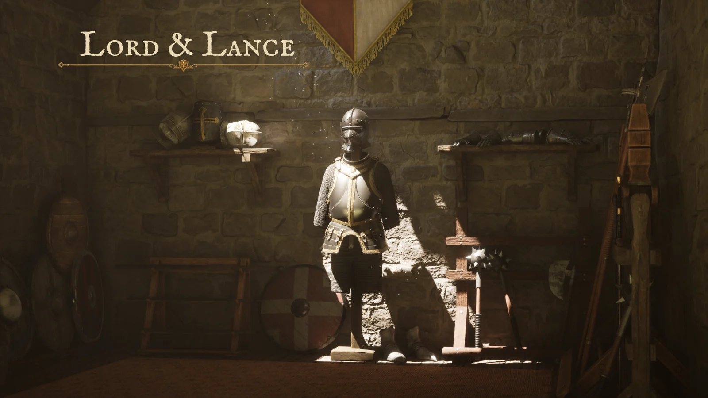
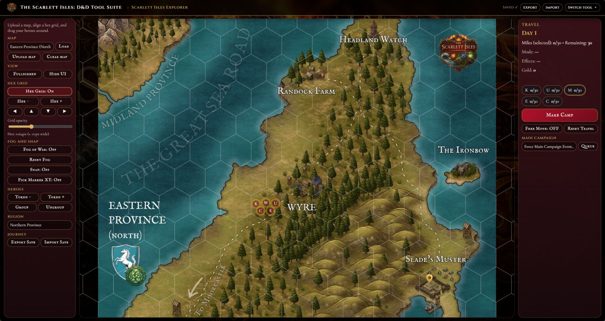

Lord & Lance
A solo project.
A structured AI workflow.
Designing the brief, ticket system and review process that coordinate AI-assisted work on an Unreal Engine project.
View case studyIndependent projects · Worcestershire, UK
Selected work / 2026
I combine AI-assisted development, game engines and creative tools to turn ideas into things you can use.
I shape the idea, direct the tools and check the result.
Explore the workGame prototyping / Interactive experiences / Creative workflows
Download CVThree ways of turning an idea into a system.

A solo project.
A structured AI workflow.
Designing the brief, ticket system and review process that coordinate AI-assisted work on an Unreal Engine project.
View case study
From a simple blockout to detailed geometry, with human review between stages and asset experiments in Unreal.
View case study
An original fictional world, turned into browser tools for exploration, encounters and play.
View case studyProject statuses and the scope of each evidence item are explained within the case studies.
My role in an AI-assisted workflow.
I own
Creative direction, system design, specifications, UI decisions, acceptance criteria and final review.
AI assists
Code generation, Blender automation, first-pass imagery and documentation support. I review and test what comes back.
Define the experience and its constraints.
Turn the brief into a testable task.
Review the output against the intention.
Keep what works. Record what changed.
A bit of context
I’m Harry, a Creative Technologist based in Worcestershire. My work spans game development, 3D workflows, browser tools, music production and an original fantasy setting.
I came to this through writing and worldbuilding. Building tools for that world led me into AI-assisted web development, then Unreal Engine and Blender.
Alongside these projects, I’ve led operational teams and worked in roles where clear briefs, quality checks and reliable delivery matter. I bring that discipline to creative work.
Read my CVTools I use across my projects
Unreal Engine · Blender · Claude Code · MCP · ChatGPT image tools · Meshy · Git & GitHub · Canva · Krita · FL Studio
Open to creative technology roles
Have a creative problem, a prototype to explore or a role to discuss?
harryhudson93@hotmail.co.ukWorcestershire, UK · Open to remote and hybrid work